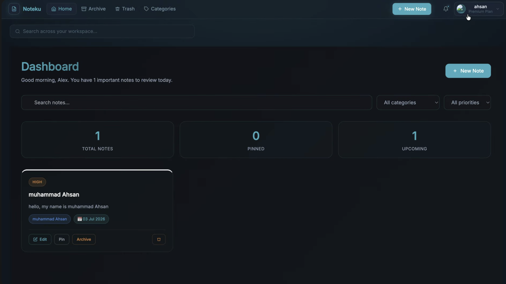
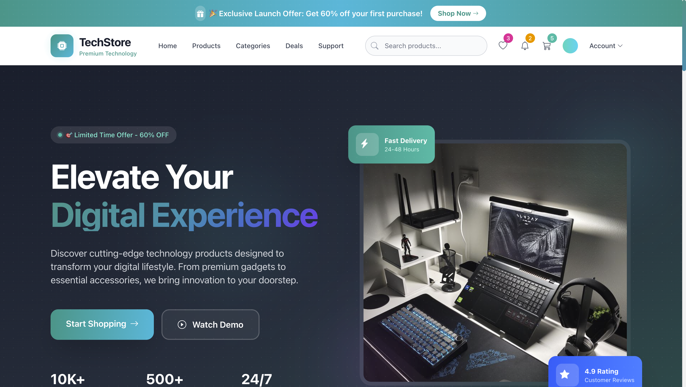
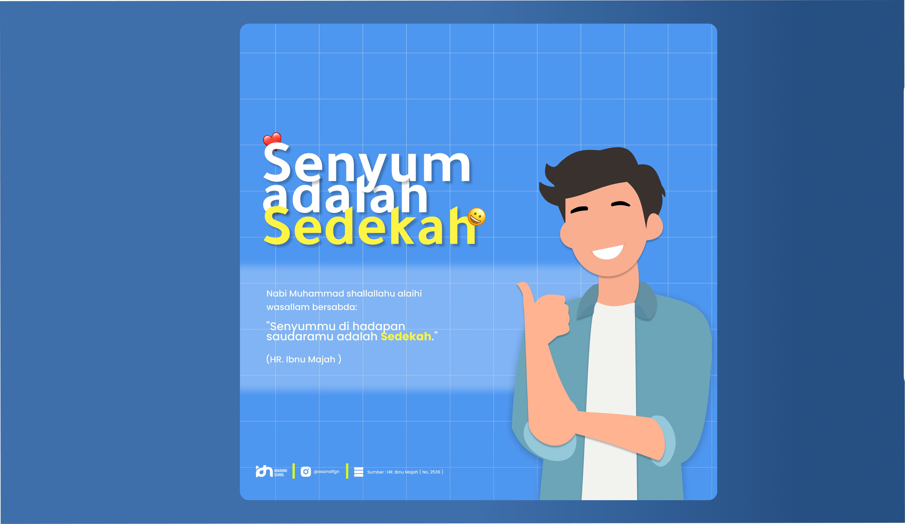

E-Library Platform
Full-stack digital library system featuring multi-role authentication, structured book catalog, circulation tracking, and administrative reporting.

Payroll Management System
Integrated HR & payroll platform with role-based access, employee attendance monitoring, automated salary computation, and digital slip generation.

Notesku – Cloud Notepad App
Personal note-taking application with private user workspaces, instant search filtering, note archiving, and responsive CRUD workflows.

OneSchool E-Report
Real-time academic reporting platform powered by Firebase. Streamlined school communication and earned the "Best Web Project" school award.

Prime Edge Digital
Modern corporate web platform for a digital agency, structured to present core services, portfolio highlights, and client conversion funnels.

M-Ahsan Psychology
Multi-page clinical psychology website engineered for clarity, accessibility, and patient trust—featuring practitioner profiles and consultation booking.

Tech Store E-Commerce
Responsive e-commerce storefront for technology products, featuring structured catalog grids, interactive product cards, and mobile-first navigation.

Qyta — Food App UI/UX
End-to-end mobile food delivery interface designed in Figma, focusing on intuitive menu discovery, cart ergonomics, and interactive prototyping.

A Smile is Charity
Minimalist typographic poster and gentle motion graphics piece inspired by the prophetic tradition: "Your smile in the presence of your brother is charity."